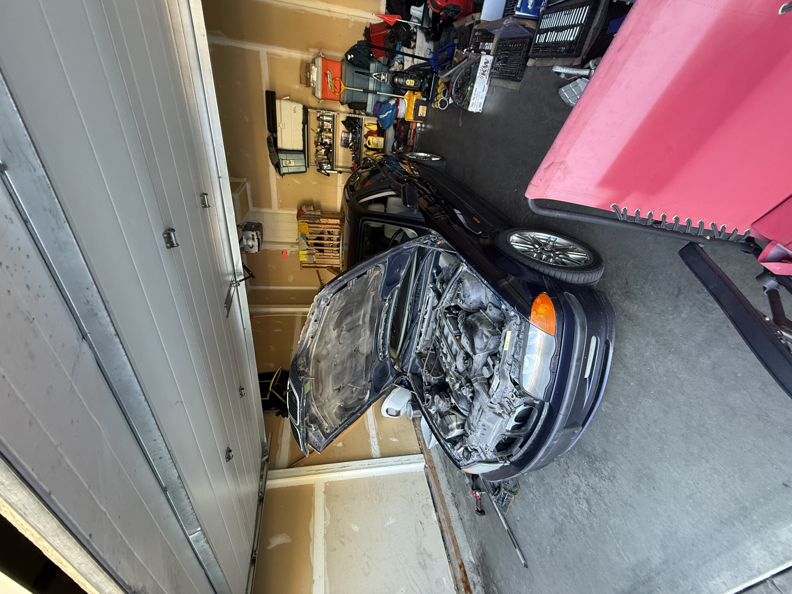
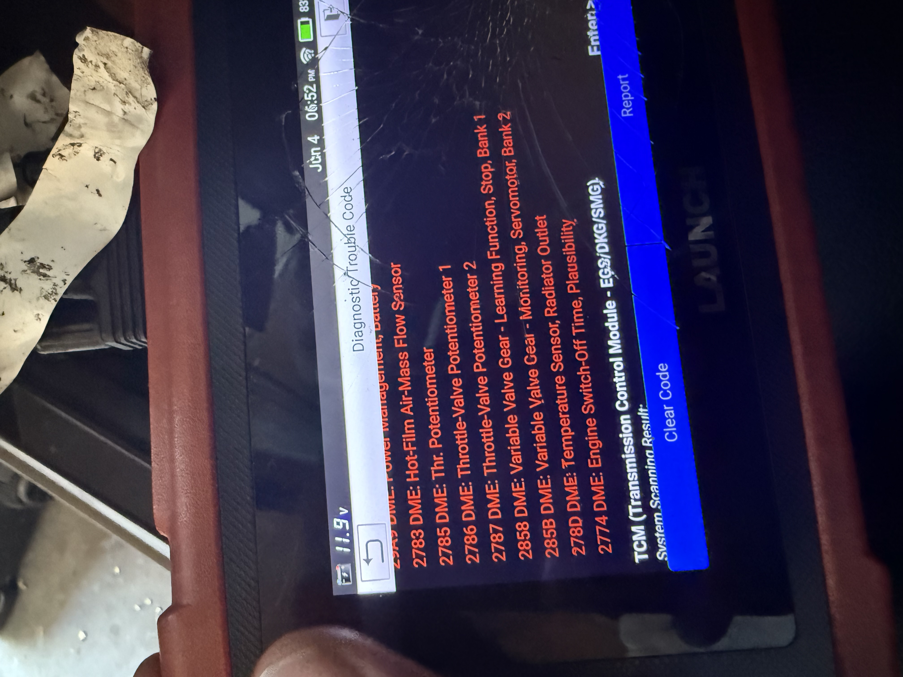
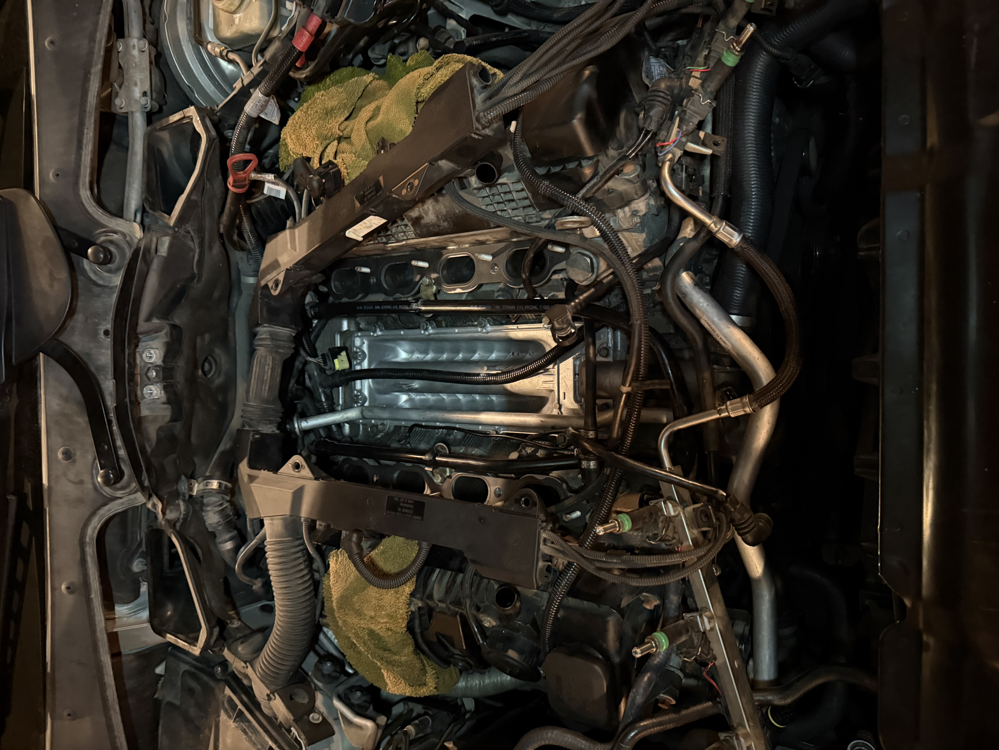
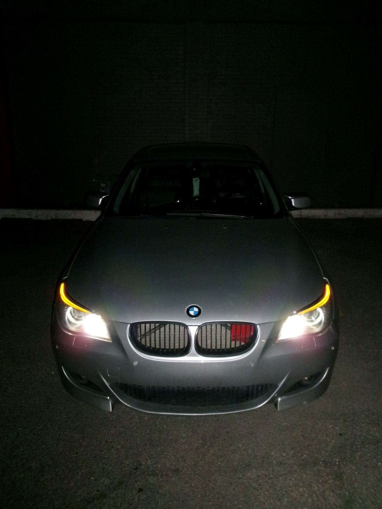
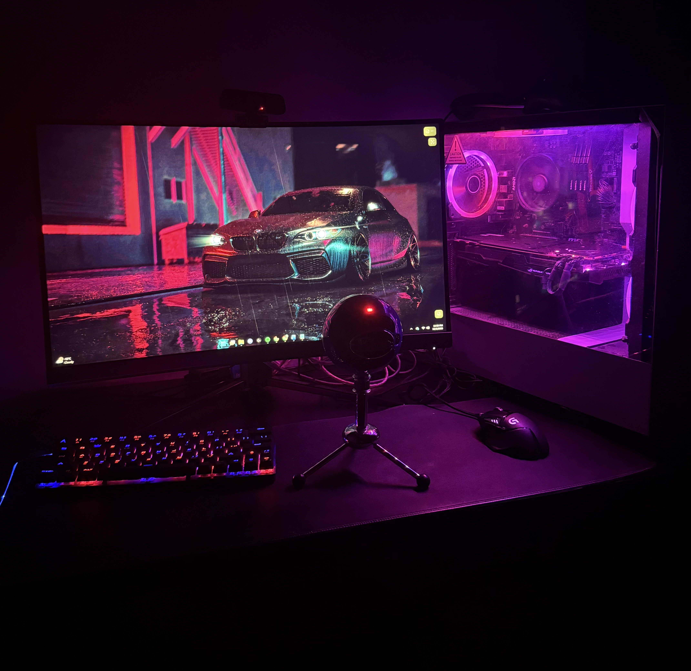

Personal interests and growth
These interests matter to me because they connect to how I work
and learn. Each one has shaped my discipline, problem solving,
and teamwork in some way.
Soccer and leadership

I have played soccer for many years, with Calgary foothills, Calgary
Villains Majors and League 1 teams. And have been a captain
and MVP in school and club settings.
Soccer has taught me discipline, communication, and how to
handle pressure. It also showed me how to lead by example
and support others even when things are not going well.
I want to stay connected to soccer in the future, either
by playing, coaching, or supporting teams in some way.
Automotive technology, BMW coding, and mechanical work






I enjoy working with cars, especially when it involves diagnostics
and coding. I have used BMW tools such as INPA, TOOL32 and OB2 with integrated coding to
read data and adjust settings. I also have a strong hands on mechanical background to working on cars.
This pushes me to learn how different systems talk to each other
and how software affects real hardware.
I would like to connect this interest with my tech skills by
working in a role that combines IT and automotive systems.
PC building and hardware

Building and fixing computers started as a hobby and became
a way to learn real technical skills. I enjoy picking parts,
putting systems together, and solving performance problems.
This interest supports my CIS studies and future work in IT.
It keeps me comfortable working inside machines and taking
responsibility for the result.
I plan to keep building and upgrading systems and to stay
current with hardware changes over time.